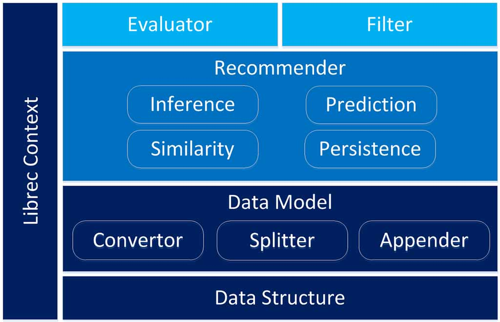
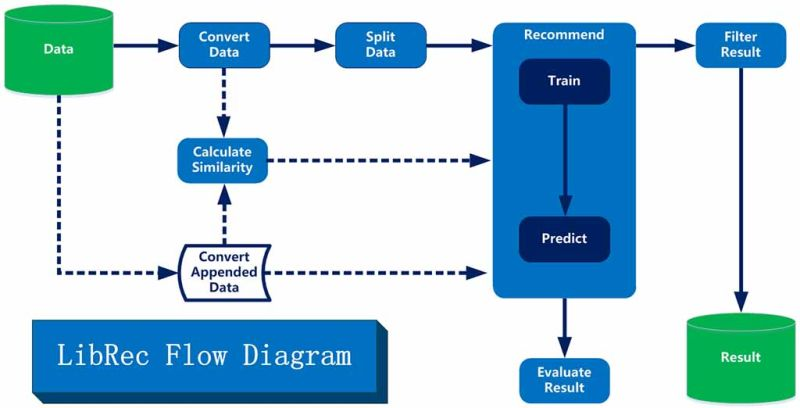

Exploration makes surprise
Exploration makes surprise
Recommender systems have been well recognized as a typical application of Big Data and Machine Learning. LibRec is a GPL-licensed Java library (Java version 1.7+ required), aiming to solve two classic tasks in recommender systems, i.e., rating prediction and item ranking by implementing a suite of state-of-the-art recommendation algorithms.
It has been listed by the RecSys Wiki (see the LibRec page).
|  |  |
Fig.1 LibRec Modules |
Fig.2 LibRec Processing Flow |
A number of papers adopting LibRec can be found here.